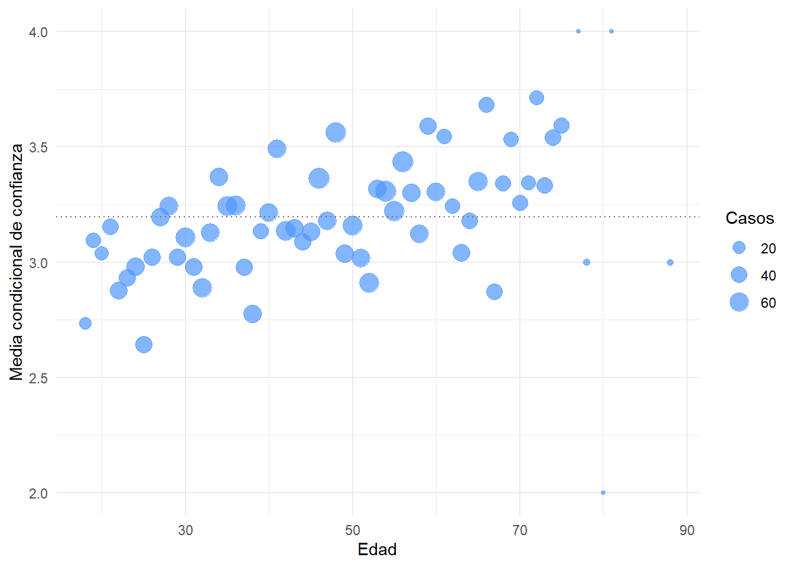
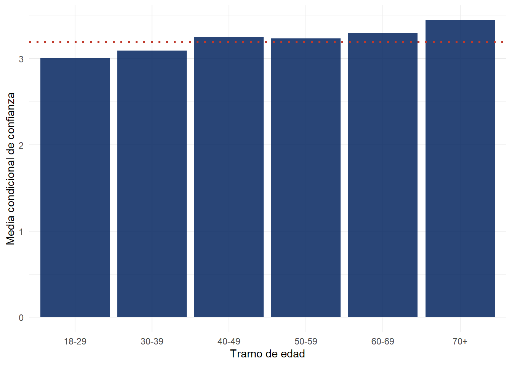
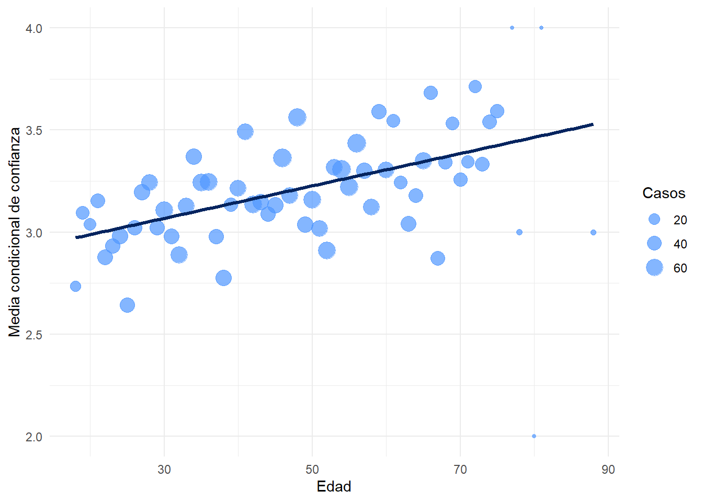
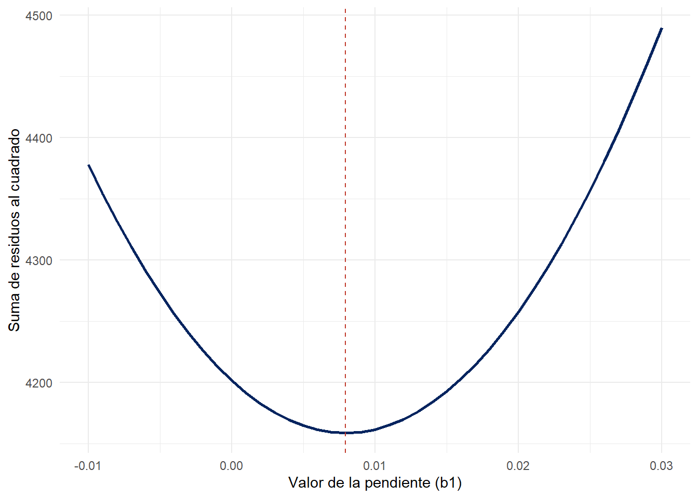

pacman::p_load(dplyr,
sjmisc,
sjPlot,
sjlabelled,
kableExtra,
ggplot2)Práctico 02. Regresión lineal simple
Métodos estadísticos para Ciencias Sociales III
1 Presentación
1.1 Objetivo de la práctica
En el práctico anterior trabajamos con la estructura de una base de datos, las escalas de medición y la asociación entre variables, y trazamos una primera recta de regresión sin detenernos en cómo se obtiene.
Esta guía se concentra exclusivamente en la regresión lineal simple, es decir, en modelos con una sola variable independiente. Al terminar, usted debería ser capaz de:
- Comprender la recta de regresión como una síntesis de las medias condicionales de \(Y\)
- Estimar los coeficientes \(b_0\) y \(b_1\) a mano, replicando el procedimiento visto en clases
- Estimar el mismo modelo con la función
lm()y comprobar que los resultados coinciden - Interpretar el intercepto y la pendiente en términos sustantivos
- Obtener valores predichos y residuos, y utilizarlos para predecir
- Comprender por qué el criterio de estimación se denomina mínimos cuadrados ordinarios
La evaluación del ajuste del modelo (\(R^2\)) y la inferencia estadística se abordarán en la sesión teórica siguiente y en el próximo práctico.
1.2 Datos
Continuaremos con la primera ola (2016) del Estudio Longitudinal Social de Chile (ELSOC), del Centro de Estudios de Conflicto y Cohesión Social (COES), y con la confianza en vecinos como variable dependiente.
2 Preparación
2.1 Librerías
rm(list = ls()) # limpiar el espacio de trabajo
options(scipen = 999) # valores sin notación científica2.2 Carga y procesamiento
Repetimos el procesamiento realizado en el práctico anterior. Conviene que ejecute cada línea y verifique que comprende qué hace; si alguna no le resulta clara, revise el práctico 01 antes de continuar.
#load(url("https://dataverse.harvard.edu/api/access/datafile/7245118"))
load(url("https://github.com/Kevin-carrasco/metod3-unab/raw/refs/heads/main/files/data/elsoc16-22.RData"))
proc_data <- elsoc_long_2016_2022.2 %>%
filter(ola == "1") %>%
select(t01, # Confianza en vecinos
m01, # Nivel educacional
m0_sexo, # Sexo
m0_edad) # Edad
proc_data <- proc_data %>%
set_na(., na = c(-999, -888, -777, -666)) %>%
rename("confianza_vecinos" = t01,
"educacion" = m01,
"sexo" = m0_sexo,
"edad" = m0_edad)
proc_data <- na.omit(proc_data) # trabajaremos solo con casos completos
dim(proc_data)[1] 2906 42.3 Descriptivos
Antes de estimar cualquier modelo, conviene tener presentes los descriptivos de las variables involucradas. Como veremos, los promedios reaparecerán en el cálculo de los coeficientes.
proc_data %>%
summarise(media_confianza = mean(confianza_vecinos),
de_confianza = sd(confianza_vecinos),
media_edad = mean(edad),
de_edad = sd(edad)) %>%
kable("markdown", digits = 2)| media_confianza | de_confianza | media_edad | de_edad |
|---|---|---|---|
| 3.2 | 1.2 | 46.1 | 15.3 |
3 De las medias condicionales a la recta
Antes de estimar la recta, conviene detenerse en la idea que está detrás de ella.
Si no tuviéramos ninguna variable independiente, nuestra mejor predicción de la confianza para cualquier persona sería el promedio general de la variable:
mean(proc_data$confianza_vecinos)[1] 3.195802Pero sí tenemos información adicional: conocemos la edad de cada persona. La pregunta entonces es si el promedio de confianza cambia según el valor de la edad. Ese promedio calculado por separado para cada valor de \(X\) es lo que llamamos media condicional: el promedio de \(Y\) condicionado a un valor determinado de \(X\).
3.1 Cálculo de las medias condicionales
medias_cond <- proc_data %>%
group_by(edad) %>%
summarise(media_confianza = mean(confianza_vecinos),
casos = n())
head(medias_cond, 10) %>%
kable("markdown", digits = 2)| edad | media_confianza | casos |
|---|---|---|
| 18 | 2.74 | 19 |
| 19 | 3.09 | 32 |
| 20 | 3.04 | 26 |
| 21 | 3.15 | 39 |
| 22 | 2.88 | 49 |
| 23 | 2.93 | 44 |
| 24 | 2.98 | 51 |
| 25 | 2.64 | 45 |
| 26 | 3.02 | 44 |
| 27 | 3.20 | 51 |
Cada fila responde a una pregunta distinta: entre las personas de 18 años, ¿cuál es el promedio de confianza? ¿Y entre las de 19? Note además la columna de casos: algunas edades tienen muchas observaciones y otras muy pocas, lo que hace que sus promedios sean más o menos estables.
3.2 Visualización
Grafiquemos esas medias condicionales, con el tamaño de cada punto proporcional al número de casos que lo respalda:
ggplot(medias_cond, aes(x = edad, y = media_confianza)) +
geom_point(aes(size = casos), color = "#4f97ff", alpha = 0.7) +
geom_hline(yintercept = mean(proc_data$confianza_vecinos),
linetype = "dotted", color = "grey40") +
labs(x = "Edad", y = "Media condicional de confianza",
size = "Casos") +
theme_minimal()
La línea punteada marca el promedio general. Si la edad no aportara información, las medias condicionales se ubicarían aleatoriamente en torno a esa línea. Lo que observamos, en cambio, es una tendencia: las medias condicionales de las edades mayores tienden a situarse por encima.
3.3 Reduciendo el ruido
Los promedios calculados sobre pocos casos oscilan bastante. Una forma de apreciar mejor la tendencia consiste en agrupar la edad en tramos:
proc_data$tramo_edad <- cut(proc_data$edad,
breaks = c(17, 29, 39, 49, 59, 69, 100),
labels = c("18-29", "30-39", "40-49",
"50-59", "60-69", "70+"))
proc_data %>%
group_by(tramo_edad) %>%
summarise(media_confianza = mean(confianza_vecinos),
casos = n()) %>%
kable("markdown", digits = 2)| tramo_edad | media_confianza | casos |
|---|---|---|
| 18-29 | 3.01 | 504 |
| 30-39 | 3.09 | 558 |
| 40-49 | 3.25 | 587 |
| 50-59 | 3.23 | 625 |
| 60-69 | 3.30 | 414 |
| 70+ | 3.44 | 218 |
proc_data %>%
group_by(tramo_edad) %>%
summarise(media_confianza = mean(confianza_vecinos)) %>%
ggplot(aes(x = tramo_edad, y = media_confianza)) +
geom_col(fill = "#04245f", alpha = 0.85) +
geom_hline(yintercept = mean(proc_data$confianza_vecinos),
linetype = "dotted", color = "#c0392b", linewidth = 1) +
labs(x = "Tramo de edad", y = "Media condicional de confianza") +
theme_minimal()
3.4 La recta como síntesis
Finalmente, superpongamos la recta de regresión a las medias condicionales:
ggplot(medias_cond, aes(x = edad, y = media_confianza)) +
geom_point(aes(size = casos), color = "#4f97ff", alpha = 0.7) +
geom_smooth(data = proc_data,
aes(x = edad, y = confianza_vecinos),
method = "lm", se = FALSE,
color = "#04245f", linewidth = 1.2) +
labs(x = "Edad", y = "Media condicional de confianza", size = "Casos") +
theme_minimal()
Aquí está la idea central de la sesión anterior: la recta de regresión es una síntesis de las medias condicionales. No pasa exactamente por cada una de ellas, sino que resume su tendencia general mediante dos números, el intercepto y la pendiente.
Esa síntesis tiene un costo y una ganancia. El costo es que perdemos las particularidades de cada valor de \(X\). La ganancia es doble: obtenemos una descripción parsimoniosa de la relación, y podemos predecir valores de \(Y\) para valores de \(X\) que no observamos directamente en la muestra.
4 Estimación manual de los coeficientes
Nuestra pregunta es: ¿en qué medida la edad se asocia a la confianza en los vecinos? Por lo tanto:
- \(Y\) = confianza en vecinos (variable dependiente)
- \(X\) = edad (variable independiente)
Recordemos las fórmulas vistas en clases:
\[b_{1}=\frac{\sum_{i=1}^{n}(x_i - \bar{x})(y_i - \bar{y})} {\sum_{i=1}^{n}(x_i - \bar{x})^2} \qquad b_{0}=\bar{Y}-b_{1}\bar{X}\]
4.1 Paso 1: diferencias respecto del promedio
Toda la estimación se construye a partir de la distancia de cada caso respecto del promedio de su variable:
proc_data$difx <- proc_data$edad - mean(proc_data$edad)
proc_data$dify <- proc_data$confianza_vecinos - mean(proc_data$confianza_vecinos)4.2 Paso 2: productos cruzados y diferencias al cuadrado
proc_data$dif_cru <- proc_data$difx * proc_data$dify # covariación
proc_data$difx2 <- proc_data$difx^2 # varianza de XRevisemos los primeros casos:
head(proc_data %>%
select(edad, confianza_vecinos, difx, dify, dif_cru, difx2)) %>%
kable("markdown", digits = 2)| edad | confianza_vecinos | difx | dify | dif_cru | difx2 |
|---|---|---|---|---|---|
| 64 | 1 | 17.9 | -2.2 | -39.31 | 320.50 |
| 60 | 3 | 13.9 | -0.2 | -2.72 | 193.28 |
| 26 | 3 | -20.1 | -0.2 | 3.94 | 403.90 |
| 51 | 3 | 4.9 | -0.2 | -0.96 | 24.04 |
| 69 | 2 | 22.9 | -1.2 | -27.39 | 524.53 |
| 62 | 2 | 15.9 | -1.2 | -19.02 | 252.89 |
Note el sentido de la columna dif_cru: es positiva cuando ambas variables se desvían del promedio en la misma dirección (una persona mayor que el promedio y con confianza mayor que el promedio, o bien menor en ambas), y negativa cuando lo hacen en direcciones opuestas. La suma de esa columna resume, entonces, si las variables tienden a moverse juntas.
4.3 Paso 3: las sumas
suma_cru <- sum(proc_data$dif_cru)
suma_x2 <- sum(proc_data$difx2)
c(suma_productos_cruzados = suma_cru, suma_difx2 = suma_x2)suma_productos_cruzados suma_difx2
5404.588 680305.440 4.4 Paso 4: los coeficientes
b1 <- suma_cru / suma_x2
b0 <- mean(proc_data$confianza_vecinos) - b1 * mean(proc_data$edad)
c(b0 = b0, b1 = b1) b0 b1
2.829587789 0.007944355 Con lo cual la ecuación de nuestro modelo es:
\[\widehat{confianza} = b_0 + b_1 \times edad\]
5 Estimación con lm()
Naturalmente, no calcularemos los coeficientes a mano cada vez. La función lm() (de linear model) hace exactamente el mismo procedimiento. Su sintaxis se lee como “confianza en vecinos en función de edad”:
NotaRegresión simple
modelo <- lm(y ~ x, data = datos)
modelo <- lm(confianza_vecinos ~ edad, data = proc_data)
coef(modelo)(Intercept) edad
2.829587789 0.007944355 Compare estos valores con los que obtuvo en el paso 4: son idénticos. La función lm() no hace magia; ejecuta el mismo cálculo que usted acaba de realizar.
6 Interpretación
6.1 La pendiente
coef(modelo)[2] edad
0.007944355 La pendiente indica cuánto cambia la confianza esperada por cada año adicional de edad. Al ser positiva, la confianza tiende a ser mayor entre las personas de más edad.
Dos precisiones importantes al momento de redactar la interpretación:
- Se trata de un cambio promedio, no de una afirmación sobre cada persona
- Es una asociación, no una relación causal: no estamos afirmando que envejecer produzca confianza
6.2 El intercepto
coef(modelo)[1](Intercept)
2.829588 El intercepto es el valor esperado de confianza cuando la edad es cero. Aquí aparece un problema frecuente: en esta base no existe ninguna persona de 0 años, de modo que el intercepto no tiene una interpretación sustantiva directa.
range(proc_data$edad)[1] 18 887 Valores predichos y predicción
7.1 Valores predichos para cada caso
Para cada persona de la base, el modelo genera un valor predicho \(\widehat{Y}\):
proc_data$predicho <- fitted.values(modelo)
head(proc_data %>% select(edad, confianza_vecinos, predicho)) %>%
kable("markdown", digits = 2)| edad | confianza_vecinos | predicho |
|---|---|---|
| 64 | 1 | 3.34 |
| 60 | 3 | 3.31 |
| 26 | 3 | 3.04 |
| 51 | 3 | 3.23 |
| 69 | 2 | 3.38 |
| 62 | 2 | 3.32 |
7.2 Predicción para valores específicos
También podemos preguntar por valores de \(X\) que nos interesen, aunque no correspondan a un caso particular de la base. Por ejemplo, ¿cuál es la confianza esperada para personas de 30, 50 y 70 años?
Aplicando la ecuación directamente:
b0 + b1 * c(30, 50, 70)[1] 3.067918 3.226806 3.385693O bien con la función predict(), que es la forma habitual de hacerlo:
predict(modelo, newdata = data.frame(edad = c(30, 50, 70))) 1 2 3
3.067918 3.226806 3.385693 Note que la diferencia entre la predicción para 30 y para 50 años equivale a 20 veces la pendiente. Esa es la propiedad central de un modelo lineal: el efecto de \(X\) es constante a lo largo de todo su rango.
8 Residuos
La diferencia entre el valor observado y el valor predicho es el residuo:
\[e_i = Y_i - \widehat{Y}_i\]
proc_data$residuo <- residuals(modelo)
head(proc_data %>% select(edad, confianza_vecinos, predicho, residuo)) %>%
kable("markdown", digits = 2)| edad | confianza_vecinos | predicho | residuo |
|---|---|---|---|
| 64 | 1 | 3.34 | -2.34 |
| 60 | 3 | 3.31 | -0.31 |
| 26 | 3 | 3.04 | -0.04 |
| 51 | 3 | 3.23 | -0.23 |
| 69 | 2 | 3.38 | -1.38 |
| 62 | 2 | 3.32 | -1.32 |
Un residuo positivo indica que la persona reporta más confianza de la que el modelo predice para su edad; uno negativo, menos. Graficamente, corresponde a la distancia vertical entre el punto y la recta:
set.seed(2026)
sub <- proc_data[sample(nrow(proc_data), 20), ]
ggplot(sub, aes(x = edad, y = confianza_vecinos)) +
geom_smooth(data = proc_data, method = "lm", se = FALSE,
color = "#04245f", linewidth = 1.2) +
geom_segment(aes(xend = edad, yend = predicho),
color = "#c0392b", linetype = "dashed") +
geom_point(size = 2.5, color = "#4f97ff") +
labs(x = "Edad", y = "Confianza en vecinos") +
theme_minimal()
9 ¿Por qué “mínimos cuadrados”?
En clases señalamos que por una misma nube de puntos pueden trazarse infinitas rectas, y que el criterio OLS selecciona aquella que minimiza la suma de los residuos al cuadrado. Comprobémoslo.
Primero, note que la suma de los residuos del modelo estimado es prácticamente cero, porque los residuos positivos y negativos se cancelan entre sí. Por eso no sirve como criterio:
sum(proc_data$residuo)[1] -0.0000000000006293993En cambio, si elevamos los residuos al cuadrado antes de sumarlos, obtenemos una cantidad que sí distingue entre rectas:
sum(proc_data$residuo^2)[1] 4158.653Ahora probemos distintos valores posibles de pendiente y calculemos, para cada uno, la suma de residuos al cuadrado:
x <- proc_data$edad
y <- proc_data$confianza_vecinos
pendientes <- seq(-0.01, 0.03, by = 0.001)
ssr <- sapply(pendientes, function(b1) {
b0 <- mean(y) - b1 * mean(x) # el intercepto que acompaña a cada pendiente
sum((y - (b0 + b1 * x))^2) # suma de residuos al cuadrado
})
resultados <- data.frame(pendiente = pendientes, ssr = ssr)
ggplot(resultados, aes(x = pendiente, y = ssr)) +
geom_line(color = "#04245f", linewidth = 1) +
geom_vline(xintercept = coef(modelo)[2], color = "#c0392b", linetype = "dashed") +
labs(x = "Valor de la pendiente (b1)",
y = "Suma de residuos al cuadrado") +
theme_minimal()
La línea segmentada roja marca el valor de la pendiente estimada por lm(). Como se observa, coincide exactamente con el punto más bajo de la curva: ninguna otra recta produce una suma de residuos al cuadrado menor. Eso es, literalmente, lo que significa “mínimos cuadrados ordinarios”.
10 Reporte de resultados
Los resultados de un modelo de regresión se comunican en una tabla. La función tab_model de la librería sjPlot produce tablas con formato de publicación:
tab_model(modelo,
show.ci = FALSE,
p.style = "stars",
dv.labels = c("Confianza en vecinos"),
pred.labels = c("(Intercepto)", "Edad"),
string.pred = "Predictores",
string.est = "β")| Confianza en vecinos | |
|---|---|
| Predictores | β |
| (Intercepto) | 2.83 *** |
| Edad | 0.01 *** |
| Observations | 2906 |
| R2 / R2 adjusted | 0.010 / 0.010 |
| * p<0.05 ** p<0.01 *** p<0.001 | |
La tabla incluye columnas que aún no hemos revisado, como los valores p y el \(R^2\). Corresponden a la evaluación del ajuste y a la inferencia estadística, que son los contenidos de la próxima sesión teórica. Por ahora, concéntrese en la columna de coeficientes.
11 Tarea
11.1 Preparación
Cargar los paquetes y la base ELSOC, y filtrar por la ola 4 (2019)
Seleccionar las variables
c01(satisfacción con la democracia),m01(educación),m0_sexo(sexo) ym0_edad(edad)Recodificar los valores perdidos, renombrar las variables y quedarse con los casos completos
11.2 Medias condicionales
Calcular la media condicional de satisfacción con la democracia para cada nivel educacional, indicando el número de casos de cada uno
Elaborar un gráfico que muestre esas medias condicionales junto con la recta de regresión, y comentar en una o dos oraciones qué tan bien la recta resume la tendencia observada
11.3 Estimación manual
Estimar a mano los coeficientes \(b_0\) y \(b_1\) del modelo que utiliza educación como variable independiente y satisfacción con la democracia como dependiente
Reportar las sumas intermedias (productos cruzados y diferencias al cuadrado) que utilizó en el cálculo
11.4 Estimación con lm()
Estimar el mismo modelo con
lm()y verificar que los coeficientes coinciden con los del punto anteriorEscribir la ecuación resultante
11.5 Interpretación y predicción
Interpretar la pendiente en términos sustantivos, en una o dos oraciones
Evaluar si el intercepto tiene una interpretación plausible en este caso. Si no la tiene, centrar la variable independiente y volver a interpretarlo
Calcular el valor predicho de satisfacción con la democracia para los niveles educacionales 3, 6 y 9
11.6 Residuos
Calcular los residuos del modelo y elaborar un gráfico de dispersión que muestre la recta estimada
Identificar el caso con el residuo más grande en valor absoluto y comentar brevemente qué significa
11.7 Reporte
Presentar una tabla de resultados con
tab_modelRedactar un párrafo breve (máximo 250 palabras) que reporte el modelo estimado, interprete el coeficiente de interés y señale al menos una limitación de la conclusión obtenida